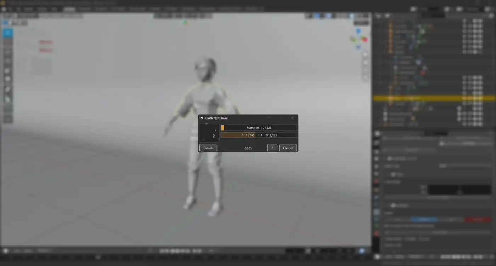

Simulate the scene, not isolated pieces.
Cloth, cables, soft bodies and colliders participate in one workflow with self-contact and object-to-object interaction.

Cloth NeXt connects Blender to the external PPF Contact Solver and handles the production workflow around it: setup, validation, baking, recovery and playback.
PPF does the simulation. Cloth NeXt gives artists a focused Blender interface for preparing, running and reviewing it.

Role-specific Physics Properties, scene context and the simulated result stay together in the application you already use.
Cloth, cables, soft bodies and colliders participate in one workflow with self-contact and object-to-object interaction.

Choose from 75 categorized presets, then tune artist-facing properties such as stretch, bend and friction.

Use fixed or yielding constraints with static and animated targets driven by ordinary Blender vertex groups.

Managed and external installations can live side by side with explicit compatibility checks and selection.

Create conservative, animation-aware collision cages for character workflows. Per-bone proxies reduce the cost of preparing dense animated meshes while keeping the setup visible in Blender.

Follow frame progress, current activity and timing without turning the Blender interface into a wall of diagnostics. The companion stays available from preparation through the solve.
Cloth NeXt preserves authenticated recovery data after an unexpected solver exit and verifies that the checkpoint belongs to the active solver installation before resuming.
Set meshes, curves and empties as Cloth, Rod / Cable, Soft Body, Collider or Force.
Start from a categorized preset and tune the physical response for the shot.

Catch geometry, storage, compatibility and memory problems before the expensive step.

Follow preparation, progress, frame fill and system load while the solver runs.
Return to a versioned playback cache with deterministic invalidation and recovery state.

Character Collision Cages, hard and soft pins, 75 material presets, verified Protocol 0.13 support, stronger recovery and a cleaner role-specific interface.
Read the release notesCloth NeXt provides the Blender workflow. The PPF Contact Solver is maintained by ST Tech / ZOZO and is never bundled with the add-on.
Keep advanced cloth simulation inside a workflow that feels at home in Blender.
View Cloth NeXt on Superhive